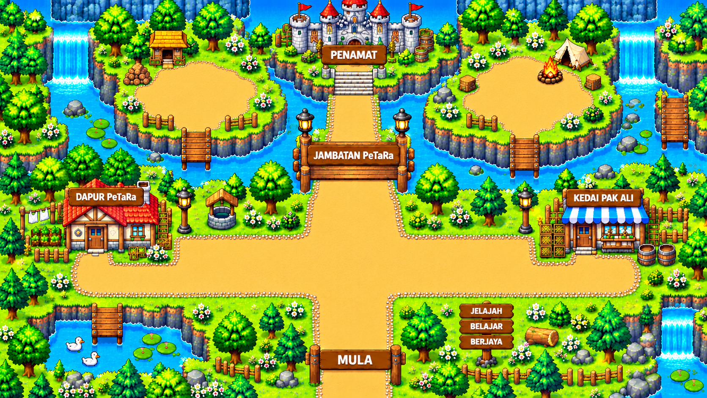
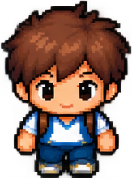

🎭 PILIH AVATAR KAMU
🎤 Pastikan anda membenarkan akses mikrofon pada peranti anda sebelum bermain.
🗣️ Sebut jawapan dengan suara yang jelas.
🎧 Penggunaan fon telinga digalakkan untuk pengalaman bermain yang lebih lancar dan menyeronokkan.
Sebut “Hai, PeTara!” dengan jelas untuk menguji mikrofon.


🚩 Checkpoint: 5/5
🎧 Mendengar selesai • 🎙️ Bertutur selesai
🌟 Tahniah! Kamu kini seorang Si PeTaRa yang hebat!